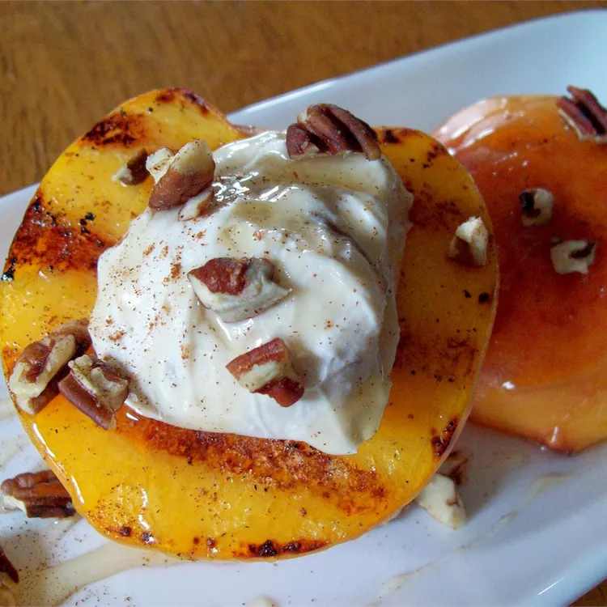

Grilled Peaches and Creams

Description
This is an easy grilled peach dessert! I use a honey nut flavored cream cheese spread and it's wonderful! Drizzle a little extra honey after they're grilled and they're
perfect!
Ingredients
- 4 peaches,halved and pitted
- 2 tablespoons clover honey
- 1 cup soft cream cheese with honey and nuts
- 1 tablespoon vegetable oil